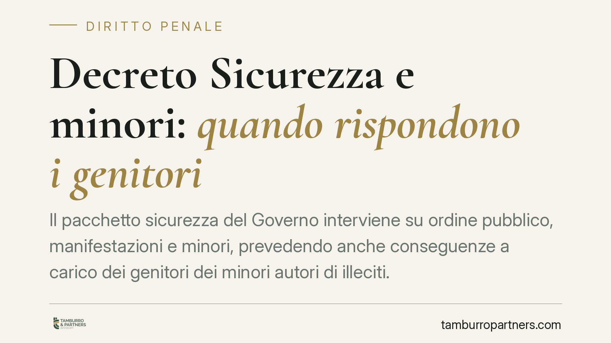

Decreto Sicurezza e minori: quando rispondono i genitori
Il pacchetto sicurezza del Governo interviene su ordine pubblico, manifestazioni e minori, prevedendo anche conseguenze a carico dei genitori dei minori autori di illeciti. Il tema è delicato e la cronaca ha semplificato alcuni passaggi tecnici. Qui facciamo chiarezza sui riferimenti normativi, distinguendo ciò che è certo da ciò che resta da verificare nel testo definitivo.

Il provvedimento: distinguere vigore e conversione
Il cosiddetto "decreto sicurezza" del Governo Meloni è intervenuto su più fronti: ordine pubblico, manifestazioni, arresto in flagranza differita e disciplina dei minori autori di reato.
Una premessa metodologica è doverosa. In materia penale occorre tenere distinte le norme già in vigore da quelle ancora in fase di conversione o modifica parlamentare. Un decreto-legge produce effetti dalla pubblicazione, ma può essere modificato in sede di conversione entro sessanta giorni: il testo definitivo può quindi divergere da quello iniziale.
Per questa ragione, in assenza di un riferimento normativo consolidato e verificabile su ogni singola misura, descriviamo le novità nella loro portata sostanziale, evitando di attribuire numeri di articolo non certi. Su un tema penale, la precisione della fonte non è un dettaglio.
Manifestazioni e violenza: attenzione ai riferimenti
La cronaca ha parlato di un "nuovo reato di partecipazione violenta alle manifestazioni". È opportuno un chiarimento tecnico.
L'art. 420-bis del Codice penale, talvolta citato impropriamente, non disciplina la partecipazione violenta alle manifestazioni: dopo la riforma Cartabia, l'art. 420-bis c.p.p. regola l'assenza dell'imputato nel processo. Si tratta di una materia del tutto diversa.
Gli interventi del decreto in tema di ordine pubblico incidono su figure come la resistenza a pubblico ufficiale, il blocco stradale e le condotte violente in contesto di manifestazione, oltre che sull'istituto dell'arresto in flagranza differita, che consente di procedere all'arresto anche a distanza di tempo dal fatto sulla base di evidenze video-fotografiche. Per i riferimenti puntuali di ciascuna modifica è necessario consultare il testo coordinato una volta definitivo.
Imputabilità del minore: cosa dice davvero il codice
Sul versante minorile, è utile ricordare il quadro codicistico, spesso riassunto in modo impreciso.
L'art. 97 c.p. stabilisce che il minore di quattordici anni non è imputabile: non può quindi essere chiamato a rispondere penalmente del reato.
L'art. 98 c.p. riguarda invece la fascia tra i quattordici e i diciotto anni: in questo caso il minore è imputabile solo se, al momento del fatto, aveva la capacità di intendere e di volere, da accertare in concreto, caso per caso.
Va segnalato con cautela che non risulta, nel testo normativo, l'introduzione di una vera e propria "presunzione di imputabilità" per la fascia 14-18 anni. Eventuali letture in tal senso vanno considerate interpretazioni non consolidate: l'accertamento concreto della capacità resta il principio di riferimento, salvo che il testo definitivo disponga diversamente.
La responsabilità dei genitori
Il punto che più interessa le famiglie riguarda le conseguenze a carico dei genitori dei minori autori di illeciti, in particolare quando il minore non è imputabile.
Qui opera un principio già noto all'ordinamento. L'art. 2048 del Codice civile prevede la responsabilità dei genitori per il danno causato dal fatto illecito del figlio minore con loro convivente. Si tratta di una responsabilità civile, finalizzata al risarcimento del danno, che prescinde dalla punibilità penale del minore. I genitori possono liberarsi solo provando di non aver potuto impedire il fatto.
Accanto a questo, l'orientamento normativo recente tende a rafforzare le conseguenze a carico dei genitori anche sul piano delle sanzioni amministrative, quando il minore non imputabile commette determinati illeciti. Anche su questo profilo, l'esatta portata delle sanzioni va verificata sul testo definitivo del provvedimento.
Cosa fare in concreto
- Verificate la fonte aggiornata. Prima di assumere decisioni, controllate il testo coordinato del decreto nella versione in vigore, distinguendo le norme definitive da quelle ancora in conversione.
- Non confondete responsabilità civile e penale. La non imputabilità penale del minore non esclude la responsabilità civile dei genitori ex art. 2048 c.c.
- Conservate la documentazione. In caso di contestazioni, raccogliete ogni elemento utile a dimostrare l'adempimento dei doveri di vigilanza ed educazione.
- Per i minori 14-18 anni, valorizzate l'accertamento in concreto della capacità di intendere e volere: è un presidio di garanzia da far valere nel procedimento.
- Richiedete una valutazione individuale. È opportuno valutare ogni situazione con un'analisi individuale, evitando generalizzazioni tratte dalla cronaca.
---
Contributo informativo a cura di Tamburro & Partners - Avv. Giuseppe Tamburro. Non costituisce parere legale.
Ogni condominio ha una storia a sé.
Se gestisci un'amministrazione e vuoi un confronto su una specifica questione condominiale, scrivi allo studio. Ti rispondiamo entro un giorno lavorativo.